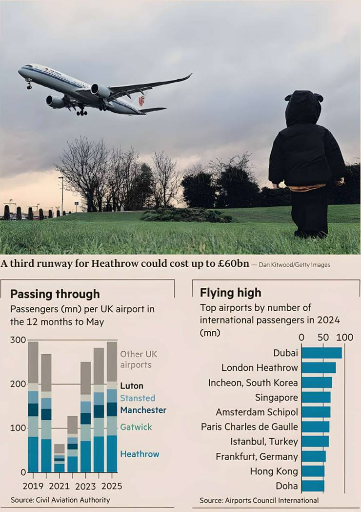

What’s a billion or two, or 10 even, between friendly investors? Heathrow airport will this week publish detailed plans for a privately financed third runway. Rumours and guesstimates run as high as £60bn. The world’s most expensive airport — a regular airline gripe — should assume the brace position for an onslaught of headlines and incredulity.
British sensitivity is extremely high when it comes to infrastructure investment. Between the debacle of the pared-back High Speed Rail 2 plans, which are now expected to cost £80bn, and the long-running debate over nationalising Thames Water, whose private owners loaded it with unsustainable debt, trust is low in the management skills of both officials and the private sector when it comes to public goods.
Heathrow, whose largest shareholder is French private equity group Ardian, has already come under fire this month after submitting a separate £10bn investment proposal to its regulator. Covering plans for the five years from 2027, Heathrow’s backers would invest £2bn in fresh capital. Airlines — for which read their customers, mostly — would face a 17 per cent increase in the average landing charge per passenger over that time. The spend, Heathrow says, would include a big expansion in terminal space and an increase in passenger capacity of 10mn, or about 12 per cent from 2025 targets. Airlines have called the costs excessive.
The numbers making the rounds are big. But not all the spluttering is justified. Airport expansions don't come cheap. Dallas Fort Worth last year announced a $9bn upgrade plan, promising a big transformation. New York’s JFK is in the middle of a $19bn redevelopment, pledging sparkling new terminals and snazzy streamlined processes. Singapore's Changi airport, regularly voted the world’s best, is getting a new runway and an additional terminal for some S$13bn (£8bn).
These plans look less pricey than Heathrow’s, but these airports are not as constrained by space and the need to build up or tunnel down.
Heathrow’s investors received their first dividend this year since the Covid-19 pandemic. The airport has held off confirming further payouts as it waits for regulatory input on its spending plans. The most impressive number in its first-half report was that 98 per cent of passengers spent less than five minutes waiting at security.
No entertaining holiday or business travel stories start with a saunter through check-in, security and boarding. But airport headlines don't just have to be about things that go wrong, either. The success of the cross-London express Elizabeth Line, albeit two decades in the building and billions over budget, shows big transport projects can still wow for the right reasons. Would that Heathrow, whether it spends £10bn or multiples of that with third runway approval, ends up following that example.